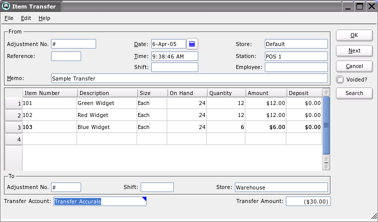
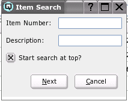

Item Transfer

The item transfer screen is used to transfer stock internally
between two stores.
Use the search feature to find items in large transfers. Just click on the
"Search" button on the right and search by item or description.
From
-
- Adjustment Number - The Quasar transfer screen creates an
item adjustment in both the "From" store and the "To" store. Quasar
selects the next item adjustment number for the "From" store.
- Reference - A number that references the item transfer.
- Date - The date for the item transfer. The date determines the
accounting period in which the item adjustments will be posted.
- Time - The time that the item transfer is created.
- Shift - The shift that the item transfer is linked to
through a shift close.
- Store - Enter the from store for the transfer.
- Station - The station (work station) on which the item
transfer is created.
- Employee - The employee creating the item transfer.
- Memo - Defines the item transfer.
Item Entry Table
-
- Item Number - The item number for the item being transferred.
- Description - The description of the item.
- Size - An item may have multiple sizes. Enter the size of
the item being transferred.
- On Hand - Quasar displays the quantity on hand in the from
store.
- Quantity - Enter the quantity of items being transferred
to the new store.
- Amount - The total dollar cost of the items being
transferred.
- Deposit - The amount of the container deposit being transferred.
To
-
- Adjustment No - The Quasar transfer screen creates an
item adjustment in both the "From" store and the "To" store. Quasar
selects the next item adjustment number for the "To" store.
- Shift The shift number for the to transfer.
- Store The name of the store the items are being
transferred to.
Transfer Account
The ledger account used to offset the change of inventory in each
store.
Voided?
Toggle on or off. Toggle on to void the item transfer. Toggle off to
re-set the item transfer to a non-voided state.
Search

Click on the "Search" button to search for items in large transfers. You can
search by item or by description.